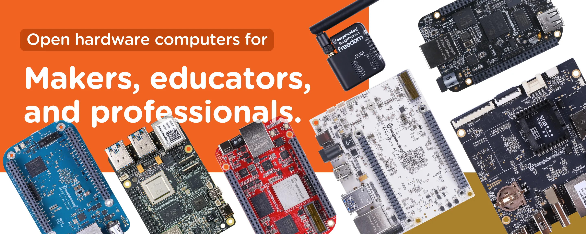

BeagleBoard Documentation#
Welcome to the BeagleBoard project documentation. If you are looking for help with your Beagle open-hardware development platform, you’ve found the right place!
Introduction#
Get started quickly on our Linux-enabled boards with Blink an LED, follow-up with articles in An Introduction to Beagles, and reach out via resources on our Support page as needed to resolve issues and engage with the developer community. Don’t forget that this is an open-source project! Your contributions are welcome. Learn about how to contribute to the BeagleBoard documentation project and any of the many open-source Beagle projects ongoing on our Contribution page.
Get started quickly at Blink an LED.
Go a bit deaper at An Introduction to Beagles.
Read the book at BeagleBone Cookbook.
Get help from the community at Support.
Learn how to contribute to the project at Contribution.
Boards#
This is where you will find the System Reference Manuals (SRMs) for all of the boards.
All Beagles are open-hardware with documentation on the design, including the materials to modify the designs from source using appropriate design tools.
Check out our tiniest single board computer: PocketBeagle 2
Check out our Pi form-factor computer with 4 TOPs AI engine at: BeagleY-AI
Check out our easy-to-use gateway computer at: BeaglePlay
Check out our highest performance (8 TOPs) board at: BeagleBone AI-64
Check out our first Zephyr-based board at: BeagleConnect Freedom
Find all of our boards at: Boards
Capes#
BeagleBone® Servo Cape
BeagleBone® Fan Cape
BeagleBone® Robotics Cape
BeagleBone® Proto Cape
BeagleBone® Power Cape
BeagleBone® Load Cape
BeagleBone® Motor Cape
BeagleBone® Comms Cape
BeagleBone® GamePup Cape
BeagleBone® Grove Kit
BeagleBone® TechLab Cape
Projects#
A number of software projects, like simpPRU exist to help Beagle developers. Some developers choose to host documentation for their Projects here.
Books#
This project hosts a collection of open-source Books written to help Beagle developers.
Find a great introduction to BeagleBone at: BeagleBone Cookbook
Learn one of the most amazing Beagle features at: PRU Cookbook
Accessories#
This is a list of hardware accessories tested with BeagleBone hardware. The list is growing with support of volunteers like you. Checkout the Accessories page for more information.